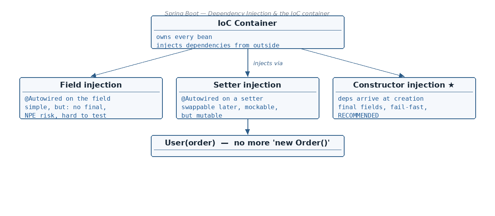

Why new inside a class means tight coupling — and which SOLID rule it breaks · What dependency injection is, and how…
☕ 9 min read · 🎬 Video walkthrough · 📊 UML diagram · 💻 Runnable code
⚡ In a nutshell — Why new inside a class means tight coupling — and which SOLID rule it breaks · What dependency injection is, and how @Autowired resolves a bean · The 3 injection styles — field, setter, constructor — with advantages & disadvantages · Circular dependency: what it is and 3 ways to fix it
public class User {
Order order = new Order(); // User creates its own dependency
public User() {
System.out.println("Hi");
}
}
public class Order {
public Order() {
System.out.println("order");
}
}
Two problems with this:

User and Order classes are tightly coupled. Suppose the Order object creation logic gets changed (let's say in the future Order becomes an interface and it has many concrete classes) — then the User class has to be changed too.Added: the full SOLID "D" phrasing — high-level modules should not depend on low-level modules; both should depend on abstractions, and abstractions should not depend on details.
new Order()hard-wiresUser(high-level) to one concrete detail, which is exactly what the rule forbids.
@Component
public class User {
@Autowired
Order order; // Spring supplies it — User no longer builds it
}
@Component
public class Order {
}
How @Autowired works — it first looks for a bean of the required type:
@Component
public class User {
@Autowired
Order order;
public User() {
System.out.println("User");
}
}
@Component
@Lazy
public class Order {
public Order() {
System.out.println("order");
}
}
Run:
User
order
Advantage
Disadvantage
@Autowired
public final Order order; // X — does not compile: final field
// must be initialized
Note this curious case from the notes:
@Autowired
public final Order order = null; // compiles...
During reflection it ignores final and the object instance is injected into it — so order is no more null!
Good to know: do not rely on that
final ... = nulltrick — it depends on reflection being able to overwrite afinalfield, which is fragile across Java versions and defeats the whole point offinal. If you want immutability, use constructor injection.
@Component
public class User {
@Autowired
public Order order;
public void process() {
order.process();
}
}
User user = new User(); // created by hand, NOT by Spring
user.process(); // NullPointerException!
// User was created using the default
// constructor -> nothing was injected.
Added: this is also why field injection hurts testing — in a plain unit test you are the one calling
new User(), so the@Autowiredfield staysnull. Your only options are booting a Spring context or using reflection utilities to stuff a mock in. With constructor injection you simply pass the mock as an argument:new User(mockOrder).
@Autowired.@Component
public class User {
public Order order;
public User() {
System.out.println("Hi");
}
@Autowired
public void setOrderInjection(Order order) {
this.order = order;
}
}
Advantage
Disadvantage
final — we cannot make it immutable.@Autowired on the constructor is not mandatory (since Spring 4.3).@Component
public class User {
private final Order order; // final IS possible here
// single constructor -> @Autowired not needed (Spring 4.3+)
public User(Order order) {
this.order = order;
System.out.println("User created with its Order");
}
}
Why recommended?
NullPointerException during runtime.final fields).A needs B and B needs A — neither bean can finish construction:
Fixes
1). First and foremost: refactor the code and remove the cycle. E.g. the common code on which both depend can be taken out to a separate class — this way we break the circular dependency.
2). Use @Lazy on the @Autowired annotation (@Lazy on field injection). Spring will create a proxy bean instead of creating the real bean immediately during application startup:
@Component
public class Order {
@Lazy
@Autowired
Invoice invoice; // proxy injected now, real bean created on first use
}
@Component
public class Invoice {
@Autowired
Order order; // cycle broken: Order finished constructing already
}
3). Use @PostConstruct — let one side wire itself in after construction:
// Order class
@Component
public class Order {
@Autowired
Invoice invoice; // Invoice no longer autowires Order
@PostConstruct
public void initialized() {
invoice.setOrder(this); // wire the back-reference manually
}
}
// Invoice class
@Component
public class Invoice {
public Order order; // NOT @Autowired -> no cycle
public void setOrder(Order order) {
this.order = order;
}
}
Added: since Spring Boot 2.6, circular references are rejected at startup by default. There is an emergency escape hatch —
spring.main.allow-circular-references=trueinapplication.properties— but treat it as technical debt while you refactor, not as a fix. Also note: with constructor injection a cycle always fails (there is no partially-constructed bean to expose), which is one more way constructor injection "fails fast" and surfaces bad design early.
One interface, two @Component implementations — which one should Spring inject?
@Component
public class User {
@Autowired
Order order;
public User() {
System.out.println("Hi");
}
}
public interface Order {
}
@Component
public class OnlineOrder implements Order {
public OnlineOrder() {
System.out.println("Online");
}
}
@Component
public class OfflineOrder implements Order {
public OfflineOrder() {
System.out.println("Offline");
}
}
It will fail with an UnsatisfiedDependencyException:
Solution 1 — @Primary on any one of the implementations (the default winner):
@Primary
@Component
public class OnlineOrder implements Order {
// injected wherever a plain @Autowired Order is asked for
}
Solution 2 — @Qualifier: name each implementation, then say which one you want at the injection point:
@Component
@Qualifier("online")
public class OnlineOrder implements Order { }
@Component
@Qualifier("offline")
public class OfflineOrder implements Order { }
@Component
public class User {
@Autowired
@Qualifier("online") // pick explicitly
Order order;
}
Good to know:
@Qualifierbeats@Primarywhen both are present —@Primaryis the default,@Qualifieris the explicit choice for one injection point.
@Autowired actually resolves a bean (match order)Added: interviewers love this one — when several beans match, Spring does not fail immediately. The resolution order is:
@Qualifier — an explicit qualifier at the injection point wins over everything.@Primary — several candidates and one is marked @Primary? That one wins.NoUniqueBeanDefinitionException.So this works without @Primary or @Qualifier:
@Component
public class User {
@Autowired
Order onlineOrder; // field name "onlineOrder" == bean name of OnlineOrder
// -> OnlineOrder is injected, no exception!
}
Default bean name = the class name with the first letter lower-cased (OnlineOrder → onlineOrder). You can override it: @Component("fastOrder").
Added: three ways to say "inject it if it exists, but don't fail startup if it doesn't":
@Autowired(required = false)
AuditService audit; // stays null if no bean exists
@Autowired
Optional<AuditService> audit; // Optional.empty() if no bean
@Autowired
ObjectProvider<AuditService> audit; // resolve lazily & safely:
// audit.getIfAvailable()
ObjectProvider is the most flexible: getIfAvailable(), getIfUnique(), or getObject() on each call (handy for prototype beans too — see the Bean Scopes topic).
Added: asking for a
ListorMapof an interface injects every matching bean — the idiomatic plugin pattern:
@Component
public class OrderRouter {
private final List<Order> allOrders; // [OnlineOrder, OfflineOrder]
private final Map<String, Order> byName; // {"onlineOrder": ..., "offlineOrder": ...}
public OrderRouter(List<Order> allOrders, Map<String, Order> byName) {
this.allOrders = allOrders;
this.byName = byName;
}
public void route(String type) {
byName.get(type + "Order").process(); // pick by bean name at runtime
}
}
Control the List order with @Order(1), @Order(2) on the implementations.
@Autowired vs @Inject vs @ResourceAdded: a classic comparison question:
@Autowired — Spring — type first, then qualifier / name — has required attribute@Inject — JSR-330 (jakarta.inject) — same as @Autowired — no required attribute; portable outside Spring@Resource — JSR-250 (jakarta.annotation) — name first, then type — @Resource(name="offlineOrder"); fields & setters only (no constructors)final, Lombok @RequiredArgsConstructor if you want brevity. Field injection appears only in legacy code and tests.@Lazy is a band-aid; the fix is extracting the shared concern into a third bean. Note Boot 2.6+ rejects cycles by default.ObjectProvider<T> for optional or prototype-per-call dependencies instead of @Autowired(required=false).List<PaymentValidator> injects ALL implementations — the idiomatic plugin pattern; order with @Order.new Service(mockRepo) — no Spring context needed.new inside a class = tight coupling and breaks Dependency Inversion (depend on abstractions, not concrete implementations).@Autowired finds a bean of the required type (creates it if missing) and injects it.final fields, NPE risk when the object is built with new, hard to test.final/immutable, fail-fast, easy unit tests; @Autowired optional with a single constructor (Spring 4.3+).@Lazy (proxy), or wire manually in @PostConstruct. Boot 2.6+ rejects cycles by default (spring.main.allow-circular-references=true is the escape hatch, not a fix).@Primary, or pick one with @Qualifier("...").@Qualifier → @Primary → field-name-matches-bean-name fallback → NoUniqueBeanDefinitionException.@Autowired(required=false), Optional<T>, or ObjectProvider<T> (most flexible).List<T> / Map<String,T> injection = all implementations (plugin pattern); @Resource resolves by name first — the opposite of @Autowired.Next topic: Bean Scopes — singleton, prototype, request, session, and when each one is created.
👏 Found this useful? Give it a few claps so more developers discover it, and follow for the whole series — every article ships with a UML diagram, runnable code, a narrated video, and a companion PDF. Happy building! 🚀